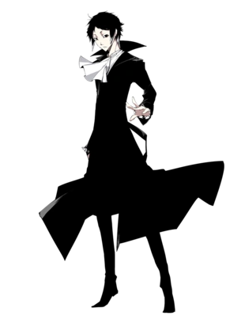
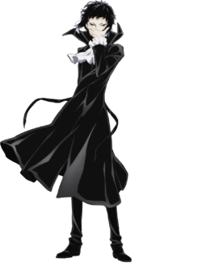
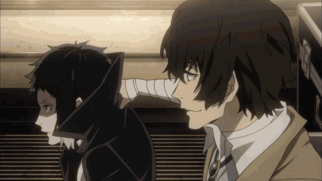
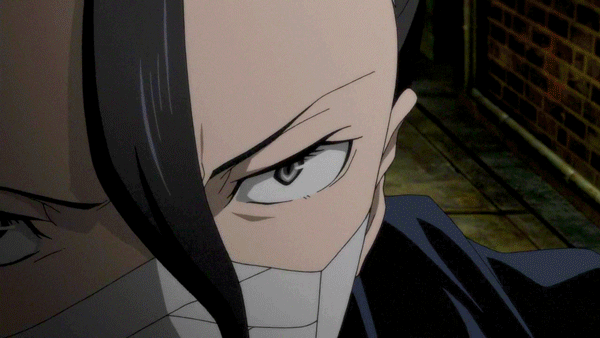

AKUTAGAWA RYUNOSUKE

Akutagawa Ryunosuke es un miembro activo de la Port Mafia
Akutagawa es una persona reservada y agresiva que no dudara en asesinar si es necesario para completar su objetivo. Este comportamiento es debido a que tuvo que estar sufriendo solo en las calles desde muy pequeño y la persona que lo entrenaria despues le enseñó todo teniendo la idea de que Akutagawa debia ser una maquina de matar
Tiene un manejo de habilidad casi perfecto por lo que su poca habilidad fisica no le afecta en el campo de batalla
Es una persona que siempre busca ser más fuerte y no le gusta perder por lo que asegurará una victoria asi tenga que romperse todos los huesos del cuerpo (como se puede demostrar a finales de la primera temporada). Al ser una persona que se esforzó por llegar a donde está, Akutagawa odia a los debiles tanto que cree que merecen morir para dar paso a los fuertes y no perderá la oportunidad de dejar su punto de vista claro (esto podría justifica su odio hacia Atsushi)
HABILIDADES
Su habilidad es "Rashomon" habilidad que le permite manipular la tela para crear un monstruo capaz de cortar cualquier cosa

RELACIONES
ATSUSHI NAKAJIMA
Inicialmente Akutagawa solamente buscó a Atsushi para reclamar la recompensa por capturar al tigre blanco, pero al ver como una persona que inicialmente vio como alguien debil ganaba una pelea contra el e incluso conseguia la aprovacion de una persona que admiraba, le hizo sentir incluso más desprecio hacia Atsushi, tenia todo lo que el no pudo conseguir y más. A pesar de todo estos dos tienen un origen similar(ya que ambos son huerfanos) y en ciertas ocaciones pueden llegar a entenderse mutuamente a pesar de que lo nieguen constantemente

DAZAI OSAMU
A los 14 años Akutagawa conoció a Dazai el cual le dijo que le daria todo lo que el deseara si se unia a la mafia, a lo cual Akutagawa pregunto si podia darle una razón para vivir, lo cual Dazai acepto como respuesta. Luego de esto Aku pasaria un entrenamiento lleno de abuso constante y tortura que le darian la personalidad que tiene ahora.A pesar de todo, Aku siente una gran admiración por Dazai y espera algun dia pelear contra el para por fin demostrarle su fuerza.

GIN AKUTAGAWA
Gin y Akutagawa son hermanos sanguineos.A pesar de que no se conoce mucho sobre su relación, se sabe que están en buenos terminos y se preocupan mucho por el otro. Se conoce que Dazai los rescato a ambos (según un dialogo de Dazai en la temporada tres)
